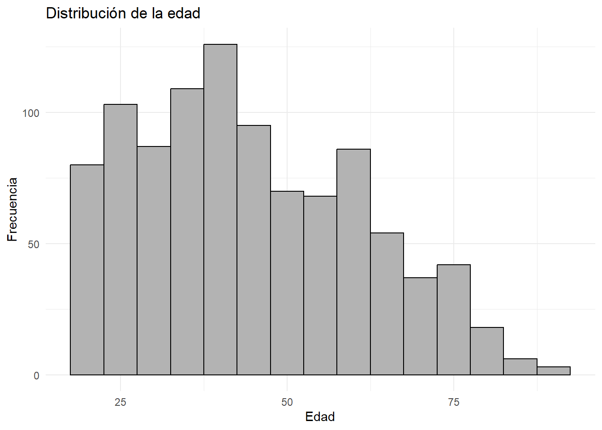
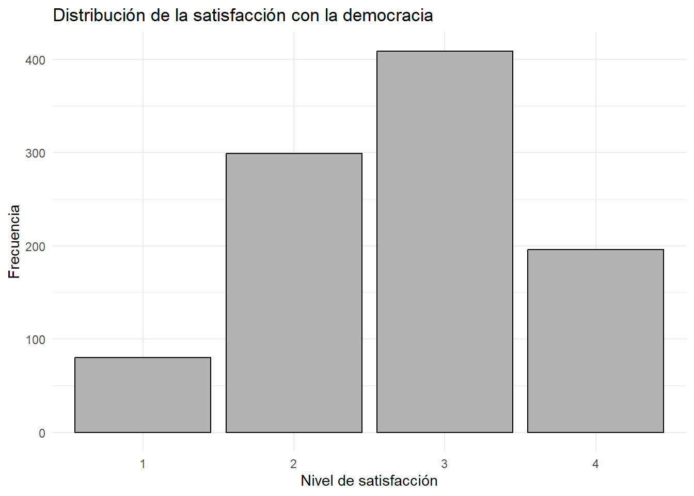

Desde la elección del presidente Bolsonaro de Brasil en el 2018, América latina y principalmente Argentina ha experimentado transformaciones políticas y sociales marcadas por una creciente polarización y la emergencia de discursos asociados a orden, seguridad y crítica a las instituciones tradicionales, llegando a su punto culmine en las elecciones de 2023, donde el actual presidente, Javier Milei fue electo. Tal como dice (Tedesco 2025) “Milei es, sin duda, una figura sumamente polarizante. Desde su ascenso en la política argentina, Milei se ha caracterizado por su fuerte retórica populista, sus propuestas económicas radicales y su estilo confrontativo, todo lo cual ha contribuido a una creciente polarización política.”.
El texto de Tedesco es uno de diversos estudios que han evidenciado un deterioro en la legitimidad de la democracia y un aumento en la tolerancia ciudadana hacia alternativas autoritarias. En este contexto, surge el problema de determinar si estos cambios en el escenario político argentino se vinculan con una mayor adhesión a posturas autoritarias en la ciudadanía, considerando variables como la insatisfacción con la democracia, el malestar económico, la tradición y la desconfianza institucional.
Justificación
La relevancia de esta investigación radica en comprender por qué, en el contexto argentino actual, ciertos sectores de la población muestran una mayor disposición a adherir a medidas autoritarias, aun cuando estas impliquen restricciones a libertades individuales. Este fenómeno se vuelve especialmente significativo en un escenario marcado por crisis económicas recurrentes, inflación sostenida, incertidumbre social y una creciente demanda por orden y estabilidad.
En este marco, resulta clave analizar cómo se configuran determinadas disposiciones ciudadanas que llevan a aceptar soluciones que, en otras circunstancias, no serían consideradas legítimas. Así, el foco está en explicar cómo este clima social se articula con la emergencia de discursos políticos que enfatizan el orden y la autoridad, sin asumir una relación causal única, sino entendiendo que responde a un entramado más amplio de factores.
En este estudio, se abordarán como ejes centrales la percepción de inseguridad, la desconfianza institucional y la crisis económica, reconociendo que, si bien no agotan la complejidad del fenómeno, constituyen variables clave para su comprensión en el caso argentino.
En conjunto, el periodo concentra transformaciones estructurales y subjetivas que permiten observar cómo evolucionan las percepciones ciudadanas en contextos de crisis acumulada y cómo estas se articulan con cambios en la disposición hacia el orden, la autoridad y los proyectos políticos emergentes en Argentina.
pregunta de investigacion
¿Cómo se distribuye la satisfacción con la democracia según variables sociodemográficas (edad, sexo, ingreso y nivel educativo) en Argentina (2023)?
Hipotesis
La satisfacción con la democracia se distribuye de manera diferenciada según variables sociodemográficas (edad, sexo, ingreso y nivel educativo) en Argentina (2023).
Variables
para estudiar como se distribuye la satisfaccion con la democracia segun variables sociodemograficas contamos con laso siguientes variables:
variables independientes:
Edad: Es una variable de intervalo o razon, pues es numerica, ordena y categoriza. Esta variable no aparece en si en el cuestionario, pero si en la base de datos
Sexo: Es variable nominal pues categoriza, pero no ordena ni es numerica. Esta variable no aparece en si en el cuestionario, pero si en la base de datos.
Nivel educativo: es una variable de intervalo o razon por q la pregunta elegida es numerica, ordena y categoriza. se eligio medir esta variable de forma mas escalar, tomando la pregunta S10: ¿A qué edad terminó Ud. su educación (educación de tiempo completo)? y S11:Qué estudios ha realizado? ¿Cuál es el último año cursado? del cuestionario.
variables dependientes:
satisfaccion con la democracia: es ordinal, pues categoriza y ordena pero no es numerica. la pregunta elegida para medirlo es la P11STGBS, que en la encuesta sale como: P11STGBS.A En general, ¿Diría Ud. que está muy satisfecho, más bien satisfecho, no muy satisfecho o nada satisfecho con el funcionamiento de la democracia en (PAÍS)?
# CARGA DE BASE (HIPO)base_2023 <-read_delim("../input/data/Latinobarometro_2023_Argentina_Csv_esp_v1.csv",delim =";")
Warning: One or more parsing issues, call `problems()` on your data frame for details,
e.g.:
dat <- vroom(...)
problems(dat)
Rows: 1200 Columns: 299
── Column specification ────────────────────────────────────────────────────────
Delimiter: ";"
chr (1): WT
dbl (298): NUMINVES, IDENPA, NUMENTRE, REG, CIUDAD, TAMCIUD, COMDIST, EDAD, ...
ℹ Use `spec()` to retrieve the full column specification for this data.
ℹ Specify the column types or set `show_col_types = FALSE` to quiet this message.
La edad promedio de los encuestados es de 44 años, con una distribución relativamente amplia. Por su parte, la edad de finalización de estudios se concentra en torno a los 18 años, lo que coincide con la edad tipica de egreso de la educación media, aunque con cierta variabilidad que refleja trayectorias educativas más extensas.”
# =========================# TABLAS DE FRECUENCIA CON PORCENTAJES# =========================# =========================# LIBRERÍAS# =========================library(dplyr)library(knitr)library(kableExtra)# =========================# TABLA: SEXO# =========================tab_sexo <- datos_satisfaccion_democratica %>%count(SEXO) %>%mutate(porcentaje =round((n/sum(n))*100, 1))kable(tab_sexo, caption ="Distribución por sexo") %>%kable_styling(full_width =FALSE)
Distribución por sexo
SEXO
n
porcentaje
1
482
49
2
502
51
# =========================# TABLA: NIVEL EDUCATIVO# =========================tab_educ <- datos_satisfaccion_democratica %>%count(S10) %>%mutate(porcentaje =round((n/sum(n))*100, 1))kable(tab_educ, caption ="Distribución nivel educativo") %>%kable_styling(full_width =FALSE)
Distribución nivel educativo
S10
n
porcentaje
5
2
0.2
7
2
0.2
8
2
0.2
9
4
0.4
10
15
1.5
11
21
2.1
12
59
6.0
13
34
3.5
14
13
1.3
15
33
3.4
16
28
2.8
17
90
9.1
18
236
24.0
19
77
7.8
20
37
3.8
21
29
2.9
22
29
2.9
23
26
2.6
24
43
4.4
25
42
4.3
26
37
3.8
27
28
2.8
28
16
1.6
29
13
1.3
30
12
1.2
31
4
0.4
32
13
1.3
33
5
0.5
34
4
0.4
35
10
1.0
36
4
0.4
37
1
0.1
38
1
0.1
39
1
0.1
40
6
0.6
42
1
0.1
44
1
0.1
45
1
0.1
48
1
0.1
50
1
0.1
60
1
0.1
65
1
0.1
# =========================# TABLA: SATISFACCIÓN DEMOCRACIA# =========================tab_sat <- datos_satisfaccion_democratica %>%count(satisfaccion_democracia) %>%mutate(porcentaje =round((n/sum(n))*100, 1))kable(tab_sat, caption ="Satisfacción con la democracia") %>%kable_styling(full_width =FALSE)
Satisfacción con la democracia
satisfaccion_democracia
n
porcentaje
1
80
8.1
2
299
30.4
3
409
41.6
4
196
19.9
2.1 tablas de frecuencia
2.2 Variable Sexo
La muestra presenta una distribución equilibrada por sexo, con un 51% de mujeres y un 49% de hombres, lo que permite comparaciones sin sesgos relevantes entre ambos grupos. Al tratarse de una variable nominal, sus categorías no implican orden ni jerarquía.
2.3 Variable Nivel educativo (edad de finalización de estudios)
La variable corresponde a la edad de finalización de estudios (tipo cuantitativa), donde valores más altos indican trayectorias educativas más prolongadas. En la muestra, se observa una concentración en valores como 13 años (36%), 17 años (14,9%) y 15 años (12,7%).
La edad de finalización de estudios se concentra principalmente en estos valores, lo que sugiere trayectorias educativas diversas, con predominio de finalización en edades relativamente tempranas.
2.4 Variable satisfacción con la democracia
La satisfacción con la democracia es una variable ordinal, donde valores más bajos indican mayor satisfacción y valores más altos mayor insatisfacción. Los resultados muestran una concentración en categorías intermedias, con un 41,6% en la categoría 3 y un 30,4% en la categoría 2. En contraste, los extremos son menos frecuentes: un 8,1% se declara muy satisfecho (1) y un 19,9% nada satisfecho (4). En conjunto, esto evidencia una tendencia hacia niveles moderados de insatisfacción.
3.1 A continuación, se presentan dos gráficos descriptivos que permiten visualizar la distribución de dos variables del estudio. Edad y satisfacción con la democracia, esto con el objetivo de caracterizar la composición de la muestra y presentar la distribución de la satisfacción con la democracia
library(ggplot2)# =========================# GRÁFICO 1: EDAD# =========================ggplot(datos_satisfaccion_democratica, aes(x = EDAD)) +geom_histogram(binwidth =5, fill ="gray70", color ="black") +labs(title ="Distribución de la edad",x ="Edad",y ="Frecuencia" ) +theme_minimal()

# =========================# GRÁFICO 2: SATISFACCIÓN DEMOCRACIA# =========================ggplot(datos_satisfaccion_democratica, aes(x = satisfaccion_democracia)) +geom_bar(fill ="gray70", color ="black") +labs(title ="Distribución de la satisfacción con la democracia",x ="Nivel de satisfacción",y ="Frecuencia" ) +theme_minimal()

3.2Distrinución de la edad
El gráfico muestra una distribución amplia de la edad, con mayor concentración en rangos intermedios, especialmente entre los 25 y 50 años. Se observa una disminución progresiva en los grupos de mayor edad, lo que refleja una muestra heterogénea con predominio de adultos en etapas medias del ciclo de vida.
3.3 Satisfacción con la democracia
La distribución de la satisfacción con la democracia se concentra en las categorías intermedias, destacando la categoría 3 como la más frecuente, seguida de la 2. Considerando que valores más altos indican mayor insatisfacción, estos resultados evidencian una tendencia hacia niveles moderados de insatisfacción, con menor presencia de posturas extremas.
Tedesco, Laura. 2025. “Raúl Alfonsín’s Government: The Beginning of Political Polarization in Argentina.”Journal of World Affairs 1 (1): 78–93. https://doi.org/10.1177/29769442251325357.